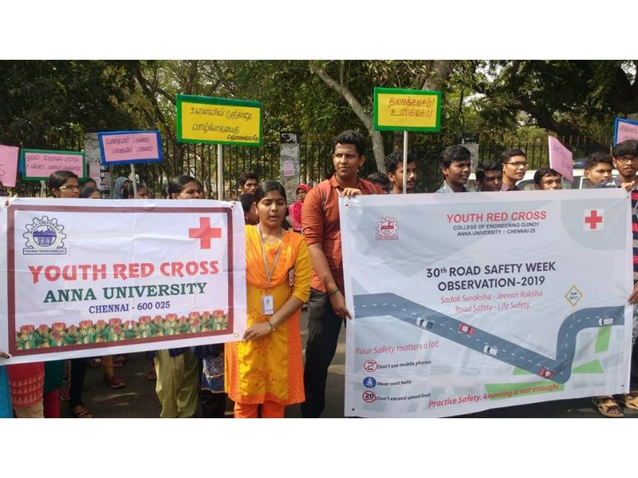
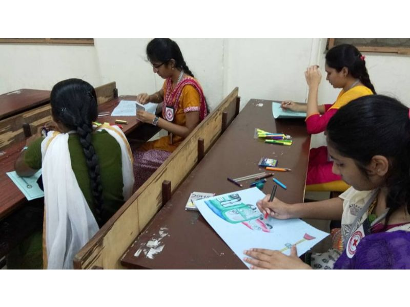
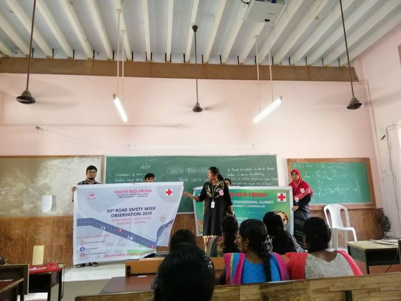
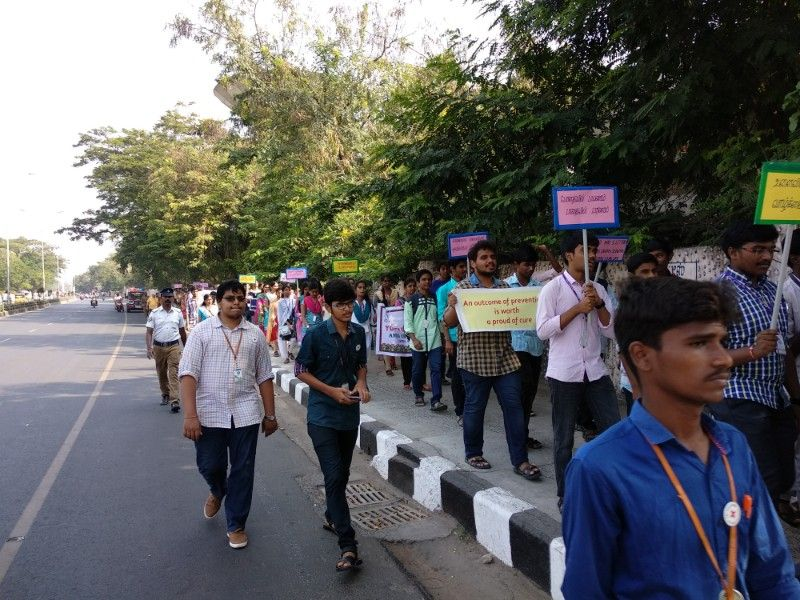
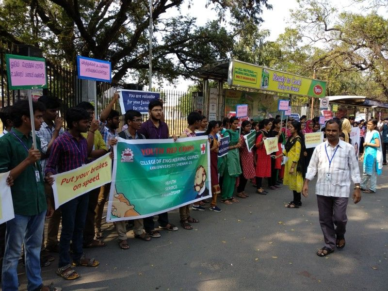
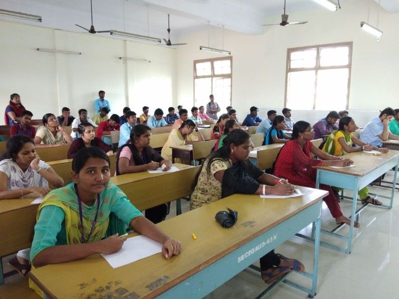
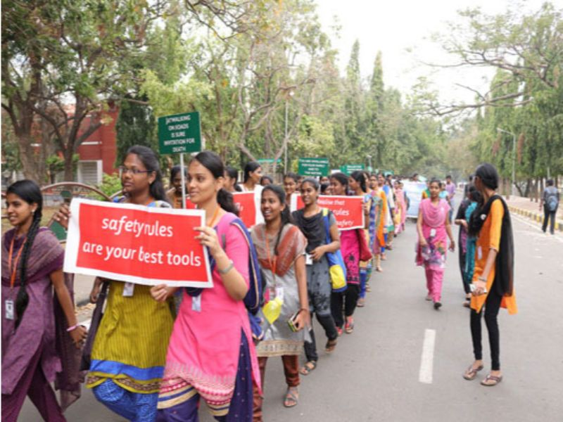
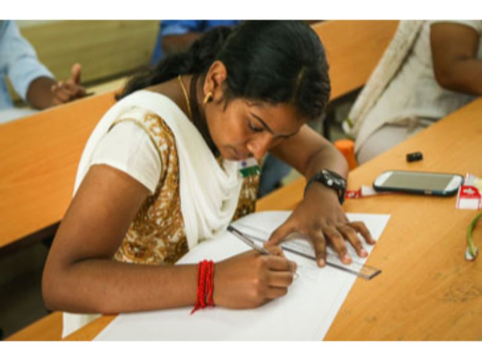
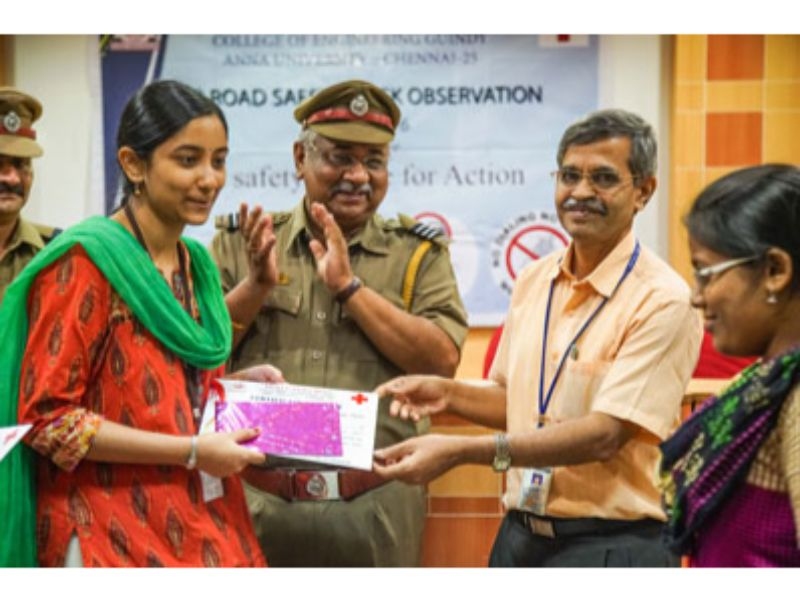

YOUTH RED CROSS
Anna university, Chennai-600025


Road Safety Programme
(For more details view the site in Desktop)
The 30 th Road Safety Week was observed on the theme “Sadak Suraksha - Jeevan Raksha” from 4 th – 10 th February 2019 by the Ministry of Road Transport & Highways, Government of India.
On 10.02.2019 (Sunday), Road Safety Rally was conducted from Anna University Kotturpuram Gate to Anna University Main Gate via Gandhi Mandapam Road and Sardar Patel Road and finished at Anna University Main Gate. Road Safety competitions like Quiz, Oration (Tamil & English), Drawing, Slogan Writing (Tamil & English), etc. were conducted based on the above theme for YRC Volunteers of CEG Campus.



Road Safety Programme
(For more details view the site in Desktop)
The 29 th Road Safety Week was observed on the theme “Your Safety, Secures your family, Be cautious on road” from 23 rd – 29 th April 2018 by the Ministry of Road Transport & Highways, Government of India.
On 28.01.2018 (Sunday) Road Safety competitions like Quiz, Oration (Tamil & English), Painting, Slogan Writing (Tamil & English), etc. were conducted based on the above theme for YRC Volunteers of CEG Campus. On 11.02.18 (Sunday) Road Safety Rally also conducted from Anna University Kotturpuram Gate to Anna University Main Gate via Gandhi Mandapam Road and Sardar Patel Road and finished at Anna University Main Gate.



On 15.03.2018 (Thursday), a Valedictory and Prize Distribution function for was held at Optimus Hall, Dept. of Industrial Engineering, CEG Campus. The prizes were distributed to the winners by the Chief Guests Thiru.A.Rajendran, Inspector of Police (Traffic), St. Thomas Mount, Thiru. R.Kumaresan, Inspector of Police (Traffic), Vadapalani, Dr.B.Kumar, YRC Coordinator, Anna University and Mr.D.Narashiman, YRC Programme Officer, Unit-I, CEG Campus.
Road Safety Programme
(For more details view the site in Desktop)
The 28 th Road Safety Week was observed on the theme “Your Safety, Secures Your Family, Be Cautious on Road” from 9 th – 15 th January 2017 by the Ministry of Road Transport & Highways, Government of India.
On 26.02.2017 (Sunday) Road Safety competitions like Quiz, Oration (Tamil & English), Painting, Slogan Writing (Tamil & English), etc. were conducted based on the above theme for YRC Volunteers of CEG, AC Tech & SAP Campuses. Road Safety Rally also conducted from CEG Main Building to Anna University Main Gate and finished at CEG Alumni Centre.
On 08.03.2017 (Wednesday), a Valedictory and Prize Distribution function for was held at Optimize Hall, Dept. of Industrial Engineering, CEG Camus. The prizes were distributed to the winners by the Chief Guest Thiru.P.Thiruvalluvan, RTO, Chennai – South, Dr.B.Kumar, YRC Coordinator, Anna University and Mr.D.Narashiman, YRC Programme Officer, Unit-I, CEG Campus.

Road Safety Programme
The 27 th Road Safety Week was observed on the theme “Road Safety – Time for Action” from 10 th – 16 th January 2016 by the Ministry of Road Transport & Highways, Government of India.
On 26.01.2016 (Tuesday), after the Republic Day Celebrations, Road Safety competitions like Quiz, Oration (Tamil & English), Painting, Slogan Writing (Tamil & English), etc. were conducted based on the above theme for YRC Volunteers of CEG, AC Tech & SAP Campuses.
On 04.02.2016 (Thursday), a Road Safety Campaign was flagged off by Dr.P.Narayanasamy, Dean, CEG Campus and Dr.B.Kumar, YRC Coordinator at CEG Main Building. The Campaign started from CEG Main Building to Anna University Main Gate and finished at CEG Alumni Centre.


On 26.02.2016 (Friday), a Valedictory function for 27 th Road Safety Week Observation was held at “CEG Alumni Centre”. The prizes were distributed to the winners by Dr.P.Narayanasamy, Dean, CEG Campus along with the Chief Guest, Mr.Rajan Sekri, Traffic Warden – Chennai, Dr.B.Kumar, YRC Coordinator, Anna University and Mr.D.Narashiman, YRC Programme Officer, Unit-I, CEG Campus.